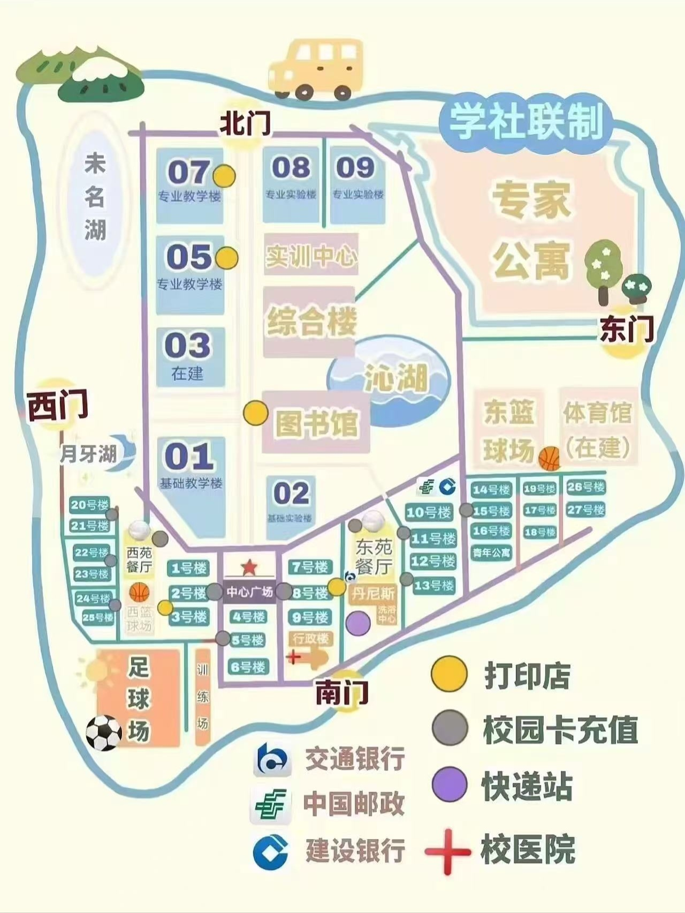

宿舍位置与周边设施
宿舍距离信息
| 宿舍号 | 朝向 | 可住人数 | 到最近食堂 | 到最近小卖部 | 操作 |
|---|---|---|---|---|---|
| 1号楼 604室 | 朝南 | 4人 | 150m (2分钟) | 80m (1分钟) | |
| 2号楼 402室 | 朝南 | 4人 | 300m (5分钟) | 100m (2分钟) | |
| 3号楼 201室 | 朝北 | 4人 | 120m (2分钟) | 250m (4分钟) | |
| 4号楼 505室 | 朝东 | 6人 | 500m (8分钟) | 200m (3分钟) |
校园地图预览
